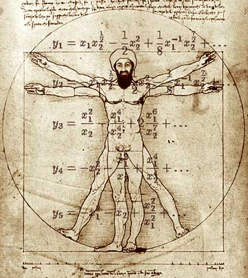

|

The Al Gebera Plot
There is yet another mind-bending terror that presents an entire set of problems for the free world.
- - - - - - - - - -
by Statistical Norm Crosby
 T NEW YORK'S KENNEDY AIRPORT today, an individual, later discovered to be a public school teacher, was arrested trying to board a flight while in possession of a ruler, a protractor, a set square, and a calculator. T NEW YORK'S KENNEDY AIRPORT today, an individual, later discovered to be a public school teacher, was arrested trying to board a flight while in possession of a ruler, a protractor, a set square, and a calculator.
Attorney General John Ashcroft believes the man is a member of the notorious Al Gebera movement. The man is being charged with carrying weapons of math instruction. Al Gebera is a very fearsome cult, indeed. They desire average solutions by means and extremes, and sometimes go off on a tangent in a search of absolute value. They consist of quite shadowy figures, with names like "X" and "Y", and, although they are frequently referred to as "unknowns", we know they really belong to a common denominator and are part of the axis of medieval with coordinates in every country.
As the great Greek philanderer Isosceles used to say, there are three sides to every angle, and if God had wanted us to have better weapons of math instruction, He would have given us more fingers and toes. Therefore, it is good that our government has given us a sine that it is intent on protracting us from these math-dogs who are so willing to disintegrate us with calculus disregard.
These statistic bastards love to inflict plane on every sphere of influence. Under the circumferences, it's time we differentiated their root, made our point, and drew the line.
Weapons of math instruction have the potential to decimal everything in their math on a scalene never before seen unless we become exponents of a Higher Power and begin to factor-in random facts of vertex.
As our Great Leader would say, "Read my ellipse". There is one principle he is the uncertainty of -- although they continue to multiply, their days are numbered and the hypotenuse will tighten around their necks.

|